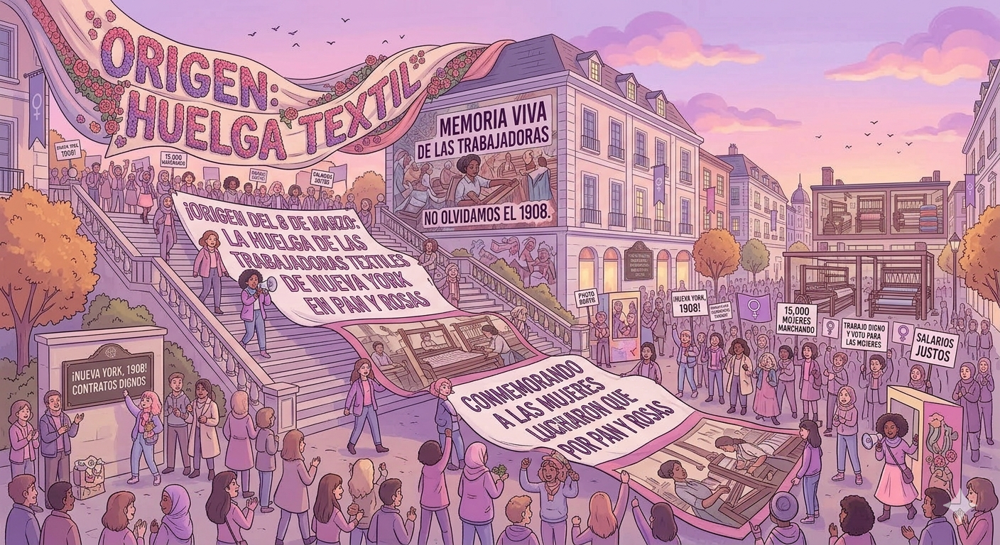

8 de Marzo
Día Internacional de la Mujer

Origen del 8M
El Día Internacional de la Mujer surge de los movimientos obreros de finales del siglo XIX y principios del siglo XX...

Lucha por los derechos
A lo largo de la historia, las mujeres han luchado por derechos fundamentales como el voto...

Impacto en el mundo
Las mujeres han transformado el mundo en áreas como la ciencia...
Datos interesantes
- 🌸 El 8 de marzo se celebra en más de 100 países.
- 🌸 La ONU lo reconoce oficialmente desde 1975.
- 🌸 El color morado simboliza la lucha por la igualdad.
- 🌸 Se realizan marchas y actividades cada año.